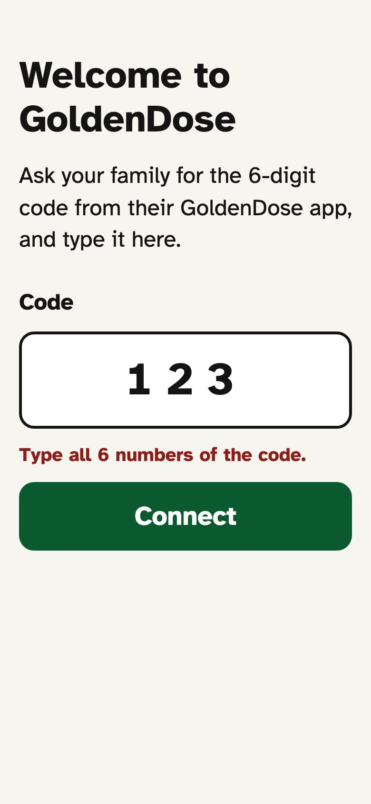

1. Connecting the phone (once)
You see
"Welcome to GoldenDose", a large box for a 6-digit code, and a Connect button.
Do
- The family member opens the family app and taps Get a connection code on the person's page.
- Type the 6 digits into the box and tap Connect.
- That's it: the phone is remembered from now on, even after closing it.
Why: passwords are one of the biggest barriers for older people. A one-time code, typed once by a family member if needed, removes that barrier completely.

Codes work once, for 15 minutes. If it says "That code didn't work", ask for a new one.